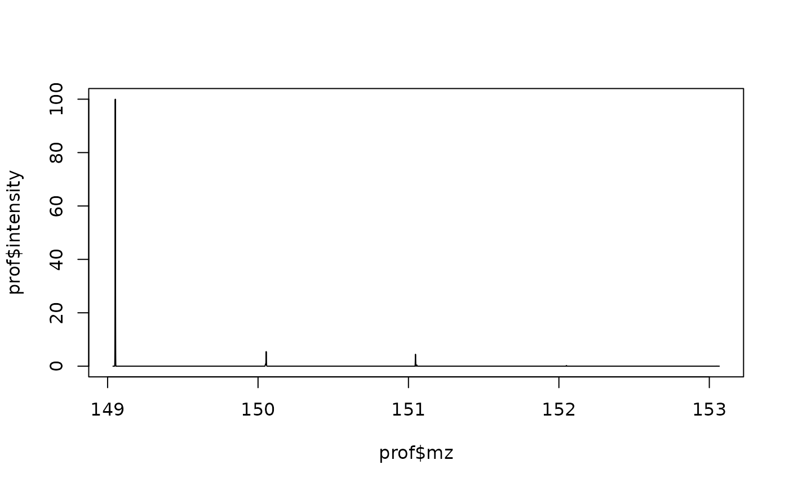

Simulate a resolving-power-dependent profile from a fine isotope pattern
Source:R/isotope_pattern.R
isotope_profile.RdSums a Gaussian peak of the appropriate width for each isotopologue in an
isotope_fine_pattern result, at a chosen resolving power. At
low resolving power, isotopologues that are close in mass merge into one
apparent peak; at high resolving power they separate – this is what an
Orbitrap or FT-ICR spectrum of the same ion actually looks like. Because
abundance is already expressed as percent of the base peak,
overlapping isotopologues sum the way real overlapping peaks do, so the
simulated apex can exceed any single isotopologue's own abundance.
Arguments
- pattern
output of
isotope_fine_pattern(or anytibble(mz, abundance)).- resolution
resolving power (R = m/z / FWHM) AT the m/z of this pattern. If your instrument's resolving power is quoted at a reference m/z (the usual Orbitrap convention, typically 200), convert it first, e.g.
R_ref * sqrt(200 / mean(pattern$mz)).- oversample
grid points per FWHM.
- pad_fwhm
how many FWHM of m/z padding to add on each side.
Value
A tibble with columns mz and intensity (percent of
the base peak's abundance, same scale as isotope_fine_pattern()'s
abundance column).
Author
Jan Stanstrup, stanstrup@gmail.com
Examples
# \donttest{
pat <- isotope_fine_pattern("C5H11NO2S")
prof <- isotope_profile(pat, resolution = 60000)
plot(prof$mz, prof$intensity, type = "l")

# }